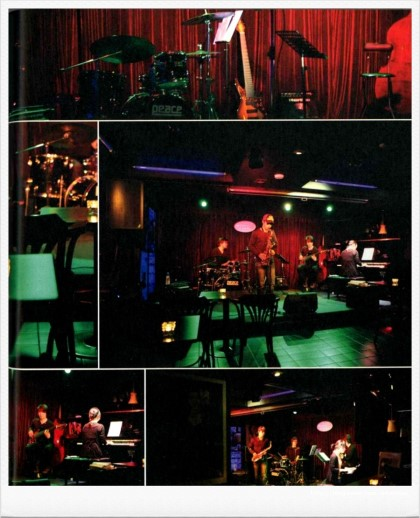
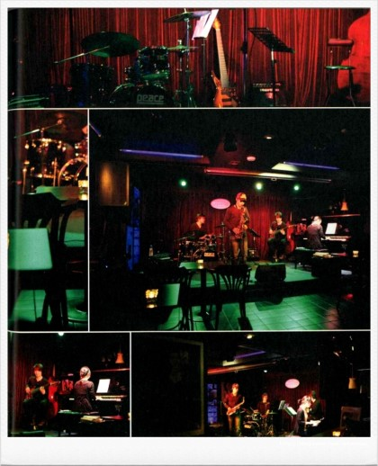
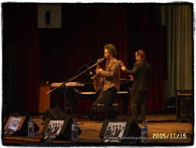
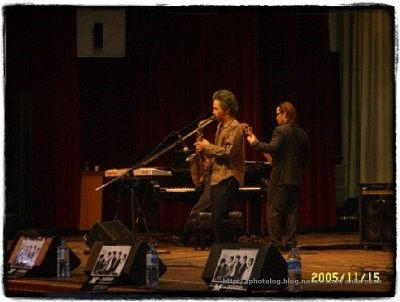
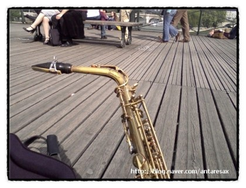
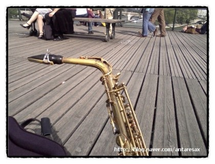
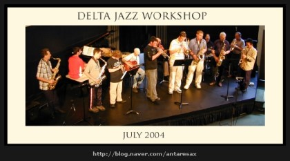
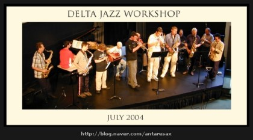
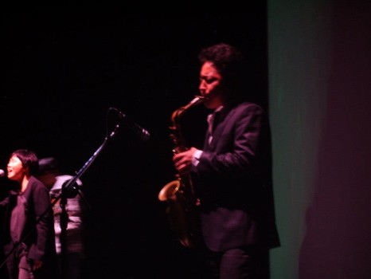
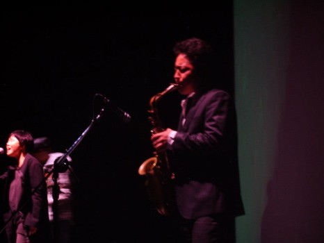

Dr.Euy Shick Hong
Saxophonist and Musician.
DrHong
색소포니스트 홍의식 박사는 캐나다 Delta Community Music School 에서 재즈 색소폰을 공부하였고
동국대학교에서 Doctor of Musical Art In Computer Music 박사학위를 받았다
영국 Plymouth University에 방문연구원으로 초청되기도하였다.
영국, 캐나다 재즈클럽에서 잼세션을 하며 많은 곡 작업을 완성하였다
블루스를 기반으로 재즈 펑키 팝 발라드 현대음악
인터랙티브 공연 등 장르에 국한되지 않고 다양한 장를 공연한다.
이미 수장의 다양한 앨범을 발표하였으며 다양한 본인만의 색깔을 표현하려한다.
My Music

2015 album "Forest of owl"
Title : Forest of owl released : 2015. 09. 30 concept : Interactive music Instruments : Alto saxo, Guitar All song by Euy shick, Hong
2015 album "Arirang second story"
Title : Arirang second story released : 2015. 08. 27 concept : Interactive music Instruments : Tea-pyoung-so, Guitar All song by Euy shick, Hong

2014 album "Arirang"
Title : Arirang released : 2014. 03. 28 concept : Interactive music Instruments : Tea-pyoung-so Arranged by Euy shick, Hong

2011 interactive album "Interaktive"
Title : Interaktive released : 2011. 11. 07 concept : Interactive music Instruments : Alto saxophone All song by Euy shick, Hong
2011 blues album "blue garlic"
Title : blue garlic released : 2011. 08. 01 concept : blues Instruments : Alto saxophone, Guitar All song by Euy shick, Hong
2011 interactive album "butter fry"
Title : butter fry released : 2011. 02. 10 concept : Interactive music Instruments : Alto saxophone All song by Euy shick, Hong

2010 1st album "Do you like apple?"
Title : Do you like apple? released : 2010. 06. 18 concept : Jazz, sound effects Instruments : Alto saxophone All song by Euy shick, Hong

2009 Solo album "Dr.Hong"
Title : Dr.Hong released : 2009. 09. 17 concept : Jazz, blues, Funky Instruments : Alto saxophone All song by Euy shick, Hong
My Photos
 

 



 

 



 



Contact Me
Seoul, Korea
Phone: +00 151515
Email: antaresax@gmail.com
Let's get in touch. Send me a message:
© 2023 Euy Shick Hong. Site by Drhong